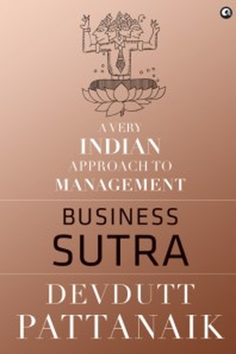

Library › Business & Startups
Business Sutra: Lessons from Indian Mythology — Summary & Key Lessons

Indian mythology as a workplace manual — manage meaning, not just metrics.
📖 OPEN THE FULL INTERACTIVE BREAKDOWN →🌐 Read it in Hindi, Hinglish, Gujarati, Tamil & 22 more languages — free, with audio.
💡 The Big Idea
Devdutt Pattanaik reads Indian mythology as a manual for the workplace. Where Western management asks 'what should we do?', Indian mythology asks 'who are we?' — because every business outcome flows from identity and belief. He introduces 'Sutras' — frameworks drawn from gods, demons and kings: the difference between 'bhava' (mindset) and 'yantra' (structure), why the same situation looks different to different people, and how organizations are ultimately fields of meaning where people work for stories as much as salaries. The book is a radical alternative to MBA thinking: manage meaning, not just metrics.
🧠 The 6 Key Lessons
Lesson 1: Bhava Over Yantra: Mindset Beats Machinery
1: The Workplace as a Field of Meaning
Pattanaik's central idea: an organization is a 'yantra' (structure, processes, rules) animated by 'bhava' (the mindset and emotions of people). Two companies with identical structures perform differently because their bhavas differ. Management obsessed only with systems ignores the emotional reality that actually drives work. The same rule creates trust in one team and fear in another, depending on bhava. Great leaders manage meaning — the stories people tell about why their work matters — because meaning is what converts structure into energy. Change the bhava, and the yantra works; ignore it, and no process survives.
📖 Example: Pattanaik contrasts two Indian families: one runs a business by fear (demon-like bhava — 'work or leave'), the other by respect (god-like bhava — 'we grow together'). Same market, same product — radically different outcomes, because people work harder for… Read the full example →
⚡ Do this: Audit your team or family's bhava: do people feel like instruments or participants? Change one practice that signals 'instrument' to 'participant'.
Lesson 2: Myths Are the Operating Systems of Teams
2: Story, Identity, Meaning
Every culture — and every company — runs on myths: shared stories that define who 'we' are, what we value, and why we exist. Pattanaik argues that 'rational' workplaces still run on myths; they just pretend not to. The founder's story, the logo, the origin tale — these shape behaviour more than policy documents. Leaders who understand myth can consciously build narratives that align people; leaders who ignore myth leave it to gossip and rumour. The question is not whether you have a myth, but whether you are authoring it or letting it author you.
📖 Example: He points to how the story of the company's founding — 'we started in a garage' or 'we began in a small shop in Gujarat' — becomes a behavioural compass employees unconsciously follow. The myth determines whether risk-taking or caution feels 'natural'. Read the full example →
⚡ Do this: Write down the story your organization tells about itself. Does it describe who you want to become, or who you used to be?
Lesson 3: Karma Is Not Fate — It Is Choice in the Present
3: Freedom Within Limits
Pattanaik reinterprets karma for the workplace: the past (your inheritance, your industry, your constraints) is your 'script', but how you respond to this moment is your 'choice'. You cannot choose your starting situation, but you can choose your action within it — and that action, not the script, determines your growth. This dissolves the two traps of modern work: fatalism ('nothing I do matters') and grandiosity ('I control everything'). The wise leader works within constraints the way a river works within banks — powerful because of them, not despite them.
📖 Example: He compares two managers given the same underperforming team: one blames the 'hand they were dealt'; the other asks 'what can I do with this specific team, today?'. The second changes everything — because karma in the workplace is not the situation, it is… Read the full example →
⚡ Do this: List the constraints of your current role. For each, write one action possible within it. Take the first action today.
Lesson 4: The Demon King's Error: Seeing the World Through One Eye
4: Multiple Perspectives
Pattanaik's favourite device is the demon king Ravana — brilliant, learned, ten-headed — undone because all ten heads saw the world identically. The error: mistaking one perspective for reality. In business, this looks like a founder so convinced of their vision that they cannot see the customer's, the employee's or the competitor's view. Wisdom in Indian mythology is precisely the ability to hold multiple perspectives simultaneously — the many-eyed Indra, the three-eyed Shiva. Leaders who cultivate multiple lenses make decisions that survive contact with reality.
📖 Example: He cites how a business disagreement is rarely a clash of facts — it is a clash of perspectives, each internally consistent. The manager who asks 'how does this look from their seat?' finds solutions that the single-eyed leader cannot even see as problems. Read the full example →
⚡ Do this: Take your current biggest disagreement and write it from the other person's perspective — fully, fairly. Then re-decide.
Lesson 5: Ganesha's Model: Wisdom Before Speed
5: The Elephant-Headed Leader
In the race between Ganesha and Kartikeya to circle the world, Ganesha wins by circling his parents — declaring them his world. Pattanaik extracts a leadership model: the wise leader (Ganesha) first secures the core — trust, relationships, identity — before racing outward. Kartikeya's speed is impressive; Ganesha's judgment is effective. In organizations, this translates to: before scaling, fix the core; before the next market, secure the current team's trust. Speed without a strong centre produces impressive crashes. The Ganesha principle: go slow where it matters so you can go fast where it counts.
📖 Example: He applies it to companies that expand aggressively while their internal culture fractures — Kartikeya racing around the world, losing the home he started from. The enduring businesses are the Ganeshas: boring at the core, unshakeable under pressure. Read the full example →
⚡ Do this: Before your next expansion (hiring, market, project), list the 3 core things that must remain solid. Reinforce one today.
Lesson 6: Shiva: The Leader Who Holds Contradictions
6: The Ascetic in the Market
Shiva embodies the ultimate leadership paradox: the ascetic who is also a family man, the destroyer who is also the creator, the detached observer who is also deeply engaged. Pattanaik argues modern leaders are forced into false choices — caring vs. tough, idealistic vs. practical, personal vs. professional. Mythology says the mature leader holds both: full engagement with full detachment — doing the work with total commitment while not being owned by the outcome. This emotional sobriety is the foundation of sustainable leadership: passion without panic, ambition without addiction.
📖 Example: He describes how a leader who is 'Shiva-like' can deliver bad news without collapsing, celebrate wins without arrogance, and make hard calls without guilt — because the identity is anchored in something larger than any single outcome. Read the full example →
⚡ Do this: Pick one outcome you are emotionally addicted to. Practice detachment: do your absolute best, then release the result.
✅ 5-Step Action Plan
- Audit your team's bhava — instrument or participant? Fix one practice.
- Author the myth: write the 3-line story of who you are becoming.
- List constraints and take one action within them today.
- Write your biggest disagreement from the other side's perspective.
- Reinforce one core element before your next expansion.
⚠️ When This Doesn't Work
Pattanaik's 'business sutras from Indian mythology — dharma, karma, leela in the boardroom' is the most original Indian management book ever — and DHFL is the warning that mythology can be weaponized: India's 'most trusted' housing finance company was run by promoters who spoke the language of family, faith and community trust — the exact values Pattanaik's book celebrates — while quietly siphoning depositors' money. The caveat: cultural fluency is not ethical fluency. The leader who speaks of dharma while the balance sheet lies is the most dangerous kind — because the mythology gives him cover. Pattanaik's own lesson, read carefully, is the defence: the story must match the numbers.
💀 The Graveyard Proves It
🏠 DHFL — ₹34,000 Crore Gone — the Housing-Finance Fraud That Shook India. Burn: ₹34,000 crore siphoned; India's 2nd-largest housing lender collapsed. Read the full case study →
💬 Best Quotes from Business Sutra: Lessons from Indian Mythology
- “An organization is a yantra animated by bhava — structure is dead without mindset.”
- “Every workplace runs on myth. The question is whether you author it or it authors you.”
- “The demon king had ten heads and still saw only one perspective.”
Interactive version: mark lessons as read, listen in your language, share quote cards.